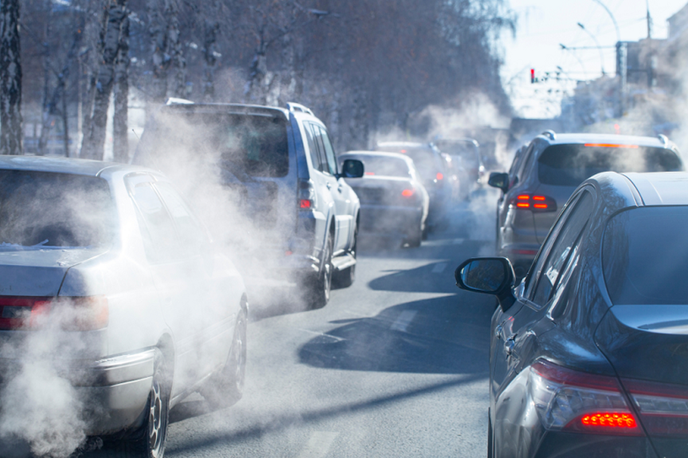
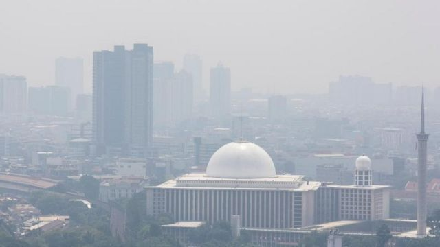

Ibu kota Indonesia, Jakarta, baru-baru ini mendapat nominasi sebagai kota dengan udara terkotor di dunia. Hal ini bisa terlihat dari beberapa gambar yang menunjukkan langit Jakarta saat ini yang berwarna abu-abu karena tertutup oleh polusi udara. Berikut foto-fotonya.
Lihat juga data indeks kualitas udara atau AQI (Air Quality Indeks) Jakarta yang menunjukkan angka yang cukup
mengkhawatirkan.
Untuk penjelasan lebih lanjut, silahkan menyaksikan video singkat berikut.
Akibat dari hal ini, banyak masyarakat Jakarta yang batuk-batuk dan itu juga terjadi pada bapak Presiden Joko Widodo yang ternyata sudah batuk-batuk selama 4 minggu. Dinas kesehatan pun menyarankan agar masyarakat Jakarta untuk diam di rumah untuk saat ini. Pertanyaannya, bagaimana bisa Jakarta jadi kota dengan udara terkotor di dunia? Berikut penyebab-penyebabnya.

Ahli polusi udara dari Institut Teknologi Bandung Puji Lestari dan timnya melakukan riset terbaru soal emisi dan distribusi pencemaran udara di Jakarta pada 2019 yang hasilnya dipublikasi pada 2022. Mereka menghitung tingkat polusi di tiga titik, yaitu di Jakarta Barat, Jakarta Selatan dan Jakarta Pusat. Polutan partikulat atau debu halus yang dinamakan PM2,5 menurut Puji, utamanya berasal dari transportasi dan industri.
“Dari transportasi bisa 46 persen, dari industri 43 persen,” ujar guru besar Teknik Lingkungan ITB itu.Kendaraan bermesin diesel yang berbahan solar tergolong banyak menghasilkan polusi udara. Bahan bakar Biodiesel 30 persen diakuinya bisa mengurangi polusi.
"Tapi itu baru 30 persen, belum bisa berkurang secara penuh,” kata Puji.Moda transportasi lain yang disoroti, yaitu kendaraan berat serta kondisi lalu lintas di Jakarta dengan tingkat kemacetan tinggi.
Sementara dari jenis polutannya, sumbernya bisa diketahui. Gas CO atau karbon monoksida lebih banyak dari transportasi. Sedangkan NOx atau nitrogen oksida berasal dari pembangkit listrik. Sedangkan SO2 alias sulfur dioksida biasanya banyak dari industri. "Itu sumber-sumber polusi yang utama di Jakarta,” ujar Puji.
Secara harian, menurut Puji, tingkat polusi di Jakarta berfluktuasi. Dari hasil pengukuran kadang bisa di bawah angka baku mutu atau sebaliknya.
“Tapi kalau dilihat secara tahunan kita lihat data rata-rata tahunan itu yang paling bahaya,” kata Puji.Organisasi kesehatan dunia atau WHO menetapkan baku mutu rata-rata tahunan 15 mikrogram per meter kubik. Sementara pemerintah Indonesia sejak 2021 menetapkan baku mutunya 55 mikrogram per meter kubik.
"Kalau menurunkan lebih ketat lagi lebih bagus sebenarnya tapi banyak konsekuensinya,” kata Puji.Konsekuensinya seperti menerapkan pengendalian polusi, aturan dalam Undang-undang dan memperketat standar emisi kendaraan dan industri.

Kepala Dinas Lingkungan Hidup (LH) DKI Jakarta Asep Kuswanto mengatakan memburuknya kualitas udara Jakarta dalam beberapa bulan terakhir disebabkan musim kemarau. Asep menjelaskan pada Juli hingga September nanti, musim kemarau sedang tinggi-tingginya.
"Sehingga berakibat pada kualitas udara menjadi kurang baik," kata Asep saat konferensi pers di Gedung Direktorat Jenderal Pengendalian Pencemaran dan Kerusakan Lingkungan Kementerian Lingkungan Hidup, Jumat, 11 Agustus 2023 seperti dilansir dari Antara.